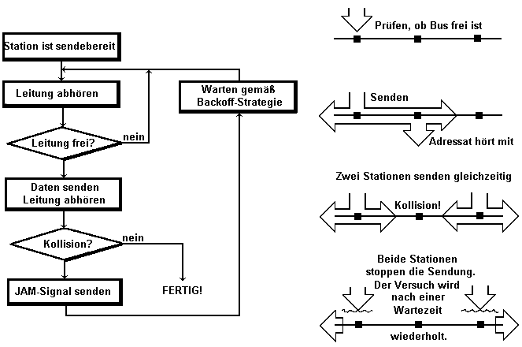
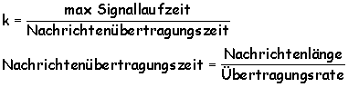

|
Grundlagen Computernetze
Prof. Jürgen Plate |
Zugriffsverfahren
Bei jedem Netz gibt es die physikalischen Verbindungswege (Kanäle),
über welche die einzelnen Stationen miteinander kommunizieren. Die
Art und Weise, wie die einzelnen Stationen diese Kanäle nutzen und
belegen, hängt vom jeweiligen System des Zugriffs, dem Zugriffsverfahren,
ab. In diesem Abschnitt werden die unterschiedlichen Zugriffsverfahren im
Überblick besprochen, wobei nicht auf die Protokolle eingegangen wird.
Das Zugriffsverfahren ist nicht von einer bestimmten logischen Netzwerkstruktur
abhängig. Lassen Sie uns zu Beginn ein historisch interessantes Verfahren
mit ein paar Sätzen würdigen, das Ausgangspunkt für die Entwicklung
der heute üblichen Zugriffsverfahren war.
Dieses Verfahren ist eines der ältesten Zugriffsverfahren und wurde
1970 an der Universität von Hawaii entwickelt ("Aloha" =
"Hallo"). Da man die Inseln nicht über Kabel verbinden konnte,
hat man ein Funknetz aufgebaut. Die Grundidee ist recht einfach: Jede Station
darf jederzeit senden. Danach wartet die sendende Station auf eine Bestätigung
auf einem separaten Rückkanal. Senden zwei Stationen zur gleichen Zeit,
treten Kollisionen auf - die Datenblöcke sind defekt und es erfolgt
keine Bestätigung. Wurde eine Bestätigung empfangen, kann bei
Bedarf weitergesendet werden. Im anderen Fall wartet jede Sendestation eine
Zeitspanne, deren Länge zufällig bestimmt wird. Danach wird der
Datenblock nochmals gesendet. Da die Wartezeit von einem Zufallsgenerator
bestimmt wird, löst sich der Datenstau auf. Solange das Verhältnis
von aktiver Sendezeit zu Leerlaufzeit hoch genug ist, arbeitet das System
sehr gut. Sobald die "Netzlast" steigt, häufen sich Kollisionen,
bis schließlich kein Datenblock mehr durchkommt. Der höchste
Durchsatz ergibt sich, wenn die Sendeblöcke 18% der Gesamtzeit belegen.
Zwei Jahre später wurde eine Verbesserung eingeführt: Slotted
ALOHA. Jeder darf nun nur noch zu Beginn eines festgelegten Zeitintervalls
mit dem Senden beginnen ("time slot"). Um nun alle Stationen zu
synchronisieren, gibt es eine ausgezeichnete Station, die "Zeitmarken"
senden darf. Die anderen Stationen synchronisieren sich mit diesem Markengeber.
Der maximale Durchsatz wird hier bei einem Sendeanteil von knapp 36% erreicht.
ALOHA wird immer noch bei manchen Formen der Kommunikation über Satelliten
verwendet.
Die Abkürzung "CSMA/CD" steht für "Carrier Sense
Multiple Access/Collision Detect". Dieses Verfahren findet häufig
bei logischen Busnetzen Anwendung (z. B. Ethernet), kann aber prinzipiell
bei allen Topologien eingesetzt werden. Bevor eine Station sendet, hört
sie zunächst die Leitung ab, um festzustellen, ob nicht schon ein Datenverkehr
zwischen anderen Stationen stattfindet. Erst bei freier Leitung wird gesendet
und auch während der Sendung wird mitgehört, um festzustellen,
ob eine Kollision mit einer Station auftritt, die zufällig zum gleichen
Zeitpunkt mit dem Senden begonnen hat (Collision Detect). Bei allen Leitungen
ist eine gewisse Laufzeit (siehe später) zu berücksichtigen, so
daß auch dann eine Kollision auftritt, wenn zwei Stationen um eine
geringe Zeitspanne versetzt mit dem Senden beginnen. In einem solchen Fall
produzieren alle sendenden Stationen ein JAM-Singal auf der Leitung, damit
auf jeden Fall alle beteiligten Sende- und Empfangsknoten die Bearbeitung
des aktuellen Datenpakets abbrechen.
Das JAM-Signal besteht aus einer 32 Bit
langen Folge von 1010101010101010... Danach warten alle sendewilligen Stationen
eine zufallsbestimmte Zeit und versuchen es dann nochmals. Alle Stationen
im Netz überprüfen die empfangenen Datenpakete und übernehmen
diejenigen, die an sie selbst adressiert sind. Wichtigster Vertreter
für CSMA/CD ist das Ethernet, dem deshalb ein eigener Abschnitt gewidmet
ist. Normalerweise tritt eine Kollision innerhalb der ersten 64 Bytes auf (Weiteres
in Kapitel 4, "Slot Time").

Konfliktparameter k:

k>1: Sender könnte eine ganze Nachricht an den Kanal übergeben,
bevor ein Konflikt entsteht. Beim CSMA/CD-Verfahren inpraktikabel.
k<1: CSMA/CD-Verfahren praktikabel
Spezifikation: Bei größter zulässiger Netzlänge und kleinster
zulässiger Paketlänge ergibt sich k~0,21.
Wartezeit
Die Wartezeit, die nach einer Kollision bis zum nächsten Sendeversuch
vergeht, wird im Standard durch ein Backoff-Verfahren festgelegt (Truncated
Binary Expotential Backoff). Es wird wie folgt definiert:
Wartezeit = ZZ * T
ZZ = Zufallszahl aus [0 < ZZ < 2n]
n = Anzahl Wiederholungen des gleichen Blocks, jedoch maximal 10
T = Slot Time
Die Slot Time entspricht der doppelten maximalen Signallaufzeit
des Übertragungsmediums. Die Wartezeit steigt im statistischen Mittel
nach 10 Versuchen nicht mehr an. Nach 16 Versuchen wird abgebrochen und
eine Fehlermeldung erzeugt.
Damit eine sendende Station eine Kollision sicher
erkennen kann, muß die Dauer der Blockübertragung mindestens
das Doppelte der Signallaufzeit zwischen den beiden beteiligten Stationen
betragen. Somit ist die minimale Blocklänge abhängig von Signallaufzeit
und Übertragungsrate. Das Rahmenformat von CSMA/CD ist nach IEEE 802.3
festgelegt. Neben Verkabelungsproblemen gibt es bei CSMA/CD-Netzen einige
typische Fehlerquellen. Einige davon sollen hier kurz vorgestellt werden.
- 'Late Collisions' sind Kollisionen, die außerhalb des Kollisionsfensters
von 512 Bit, also später, auftreten. Dafür gibt es generell drei
Ursachen: Entweder eine Station mit Hardwaredefekt (Netzwerkinterface, Transceiver,
etc.), ein Fehler in der Software (Treiber), wodurch sich die Station nicht
an die CSMA/CD-Konventionen hält (Senden ohne Abhören), oder die
Konfigurationsregeln für die Kabellänge sind nicht eingehalten
worden (zu lange Signallaufzeit).
- Sendet eine Station ohne Unterbrechung längere Zeit, also Frames mit
mehr als die maximal zugelassenen 1518 Bytes, dann bezeichnet man dies als
'Jabber' (zu deutsch 'Geplapper'). Hauptursache sind hier defekte Netzwerkkarten
oder -Treiber.
- 'Short Frames' sind Frames, die kleiner als die minimal zugelassenen 64
Bytes sind. Grund hierfür sind auch Defekte beim Netzwerkinterface
oder im Treiber.
- 'Ghost Frames' sind in Ihrer Erscheinung ähnlich einem Datenframe,
haben jedoch Fehler schon im Start-Delimiter. Potentialausgleichsströme
und Störungen, die auf das Kabel einwirken, können einem Repeater
ein ankommendes Datenpaket vorspiegeln. Der Repeater sendet das Geisterpaket
dann weiter ins Netz.
Dieses Netz wurde von IBM entwickelt. Alle Rechner sind hintereinandergeschaltet
und somit ringförmig verbunden. Im "Ruhezustand" (keine Station
will senden) zirkuliert eine spezielle Nachricht im Netz, das sogenannte
"Token" (genauer "Frei-Token", "free token").
Diese Nachricht wird von einem Rechner an den nächsten weitergegeben.
Der Rechner, der im Besitz des Frei-Tokens ist, kann senden, indem er an
dieses die Nachricht anhängt ("busy token"). Dieser Datenblock
wird von Station zu Station weitergereicht, bis sie beim Empfänger
angekommen ist. Der Empfänger bestätigt die Nachricht
durch eine Acknowledge-Meldung, die mit dem Token weiter auf den Ring geschickt
wird und schließlich wieder beim Absender eintrifft. Dieser schickt
nun wieder ein Frei-Token auf die Reise.
In der Regel berechtigt der Besitz des Tokens nur zur Sendung eines Blocks
(non exhaustive), im anderen Extremfall könnte auch definiert werden,
daß die Station soviele Datenblöcke senden kann, wie sie möchte
(exhaustive). Damit könnte aber eine Station, die den Token besitzt,
alle anderen dominieren. Normalerweise wird deshalb nur ein Block gesendet.
Außerdem wird die Dauer der Sendeberechtigung befristet (Token Holding
Time, z. B. 10 ms). Solange das Netz fehlerfrei funktioniert, stellt Token-Ring
ein sehr einfach handzuhabendes Verfahren dar. Komplexer sind die Aufgaben
beim Initieren des Netzes und beim Ein- oder Auskoppeln von Stationen. Token-Ring
ist das einzige Netz mit aktiven Stationen, die aus Eingabe- und Ausgabeeinheit
bestehen. Grundsätzlich sind alle Stationen gleichberechtigt, jedoch
übernimmt eine von ihnen als "aktiver Monitor" besondere
Überwachungsaufgaben im Netz. Eine andere Station überwacht als
"passiver Monitor" den aktiven Monitor und kann gegebenenfalls
dessen Aufgaben übernehmen. Die Aufgaben des aktiven Monitors sind:
- Erzeugen des Ringtaktes
- Überwachen des Tokens (Neuen Token erzeugen, falls er verloren geht,
Verhindern mehrerer Tokens)
- Unterbinden permanent kreisender Blöcke oder Tokens erhöhter
Priorität. (Generell: Ring säubern durch Senden eines "Purge
Ring Frame" an alle Stationen und Erzeugen eines neuen Frei-Tokens).
- Verhindern, daß mehrere Monitore aktiv sind.
- Verzögerung des Token-Rahmens um 24 Bit-Zeiten (die Länge des
Token-Rahmens beträgt 24 Bit). Auch bei extrem kleinem Ring wird so
sichergestellt, daß eine Station den Token-Rahmen vollständig
senden kann, bevor sie ihn wieder empfängt.
In regelmäßigen Abständen sendet der aktive Monitor einen
"Active Monitor Present Frame" an alle Stationen im Ring. Gleichzeitig
wird dadurch eine Prozedur in Gang gesetzt, die allen Stationen die Adresse
des jeweiligen Vorgängers im Ring liefert (NAUN = Nearest Active Upstream
Neighbour) - eine Information, die nur im Fehlerfall wichtig ist. Ein Fehler
auf Empfangsseite bedeutet, daß der eigene Empfänger oder der
Sender des NAUN defekt ist. Die Auswahl des aktiven Monitors geschieht per
"Claim-Token Process" durch:
- den derzeit aktiven Monitor, wenn dieser Probleme bei der Durchführung
seiner Aufgaben hat,
- einen passiven Monitor, wenn der aktive Monitor nicht korrekt arbeitet
(z. B. Timeout auftritt).
- eine neu eingegliederte Station, wenn diese das Fehlen des aktiven Monitors
feststellt.
Token-Ring-Netze werden normalerweise als Stern-Ring-Verbindungen mit passiven
Ringleitungsverteilern aufgebaut. In den Ringleitungsverteilern
befinden sich Relais (die von den Stationen gesteuert werden) zur Eingliederung
von Stationen und zur Schaltung von Ersatzringen bei Defekten.
Die Eingliederung einer Station erfolgt in fünf Schritten:
- Ist ein Adapter vom Ring getrennt, sind gleichzeitig Eingangs- und Ausgangsleitung
kurzgeschlossen. Es erfolgt zunächst ein Adaptertest. Nach dem Test
versorgt der Adapter die Relais mit Strom und wird in den Ring eingegliedert.
- Die Station hört nun den Ring ab. Wenn sie innerhalb einer festgelegten
Zeit keine Aktivität des aktiven Monitors wahrnimmt, startet sie den
Prozeß zur Auswahl des aktiven Monitors.
- Durch Aussenden eines "Duplicate Address Test Frame" prüft
die Station die Eindeutigkeit ihrer Adresse. Ist sie nicht eindeutig, koppelt
sich die Station wieder ab.
- Durch den NAUN-Prozeß erfährt die Station die Adresse ihres
Vorgängers und ist nun ins Netz eingegliedert.
- Von den Voreinstellungen abweichende Parameter können nun bei einer
Server-Station abgefragt werden, sofern dies nötig ist.
Die Funktionen von Monitor und der eingegliederten Stationen müssen
nicht nur einmalig initiiert, sondern auch ständig überwacht werden.
In vielen Fällen sind dies zahlreiche Aktionen, die auch viele Blöcke
auf dem Netz zur Folge haben und in deren Verlauf auch Fehler- und Ausnahmebedingungen
auftreten können. Der Nachteil von Token-Ring liegt darin, daß
beim Ausfall einer Station oder bei Kabeldefekten das Netz unterbrochen
wird. Wird die defekte Station hingegen abgeschaltet, schalten die Relais
im Ringleitungsverteiler die Leitung durch. Token Ring ist genormt nach
IEEE 802.5.
Auch beim Token-Bus wird der Zugriff über Token-Passing geregelt, nur
besitzt das Netz Bus- oder Baumstruktur. Hier haben wir also den Fall, daß
eine logische Ringstruktur auf eine physikalische Busstruktur aufsetzt.
Das Verfahren wird z. B. beim ARCNET und in der industriellen Automatisierung
(MAP = Manufacturing Automation Protocol) verwendet. Anders als beim Token-Ring
empfangen alle Stationen auf dem Bus die Daten. Daher wird die Reihenfolge
der Stationen nicht durch die hardwaremäßige Verbindung, sondern
rein logisch durch die Adreßzuordung erledigt. Die Tokens werden von
der Station mit der höchsten Adresse an diejenige mit der nächstniedrigeren
weitergereicht. Die Station mit der niedrigsten Adresse schließt den
logischen Ring durch Adressierung auf die höchste Adresse Token Bus
ist genormt nach IEEE 802.4.
Copyright © Hochschule München, FK 04, Prof. Jürgen Plate
Letzte Aktualisierung:
 Zum nächsten Abschnitt
Zum nächsten Abschnitt